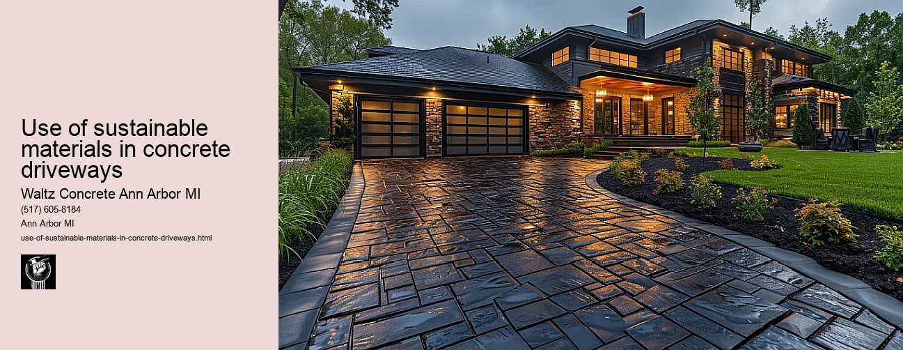

News
Concrete Driveway Installation Ann Arbor Mi
Concrete Driveway Installation Ann Arbor Mi
Choosing the right contractor for installation
Cost of concrete driveway installation in Ann Arbor
Permit requirements for driveway installation in Ann Arbor
The process and timeline of concrete driveway installation
Different types of concrete used in driveways
Maintenance and Repair of Concrete Driveways in Ann Arbor Mi
Maintenance and Repair of Concrete Driveways in Ann Arbor Mi
Preventive maintenance tips for durability
Common causes for concrete driveway damage
Professional companies offering repair services in Ann Arbor
Doityourself versus professional repairs
Costs associated with repairing a concrete driveway
Designs and Styles of Concrete Driveways in Ann Arbor Mi
Designs and Styles of Concrete Driveways in Ann Arbor Mi
Popular design trends for driveways
Considering climate factors when choosing a design or style
Unique customizations available for concrete driveways
Influence of home architecture on driveway design
Stamped stained and decorative options
Environmental Impact of Concrete Driveways in Ann Arbor Mi
Environmental Impact of Concrete Driveways in Ann Arbor Mi
Carbon footprint associated with concrete production
Use of sustainable materials in concrete driveways
Drainage considerations to reduce environmental impact
Local regulations regarding environmentally friendly driveways
Potential use of permeable or porous pavement
Alternatives to Concrete Driveways in Ann Arbor Mi
Alternatives to Concrete Driveways in Ann Arbor Mi
Asphalt driveways and their proscons
Paver stone driveways and their benefitsdrawbacks
Gravel or crushed stone as an alternative option
Comparing costs between different driveway materials
Resinbound surfaces as emerging technology
About Us
Contact Us

Use of sustainable materials in concrete driveways
Use of sustainable materials in concrete driveways
Title: The Use of Sustainable Materials in Concrete Driveways
The growing environmental consciousness in the world today has led to an increased focus on sustainability. This concept is not just confined to energy usage or waste management, but also extends to construction practices. One area that is witnessing a significant shift towards sustainable practices is the construction of concrete driveways. The use of sustainable materials in concrete driveways can drastically reduce its ecological footprint and contribute positively towards environmental conservation.
Concrete driveways are common features in many homes due to their durability, versatility, and aesthetic appeal. However, traditional methods employed for their construction utilize materials like cement and aggregates which have high embodied energy content and contribute significantly to carbon emissions. Therefore, it becomes crucial to explore alternatives that are more eco-friendly without compromising on function or aesthetics.
One such alternative is the use of recycled concrete aggregate (RCA). RCA is produced by crushing demolished concrete structures and reusing them as aggregate in new constructions. This method reduces landfill waste while simultaneously decreasing the demand for natural resources used as aggregates in fresh concretes.
Another viable option focusing on sustainability is using fly ash as a partial replacement for cement. Fly ash, a byproduct from coal power plants, when properly treated can enhance durability while reducing CO2 emissions associated with cement production.
Additionally, bio-concrete or bacterial concrete has also shown promise as a sustainable alternative. It employs bacteria within the mix which produce calcium carbonate precipitate - strengthening the material over time whilst having minimal impact on the environment.
The industry has also seen innovative solutions like pervious concrete which allows water to percolate through it thus minimizing runoff and helping recharge groundwater levels. Made from carefully controlled amounts of water and cementitious materials used to create a paste that forms a thick coating around aggregate particles; this porous medium acts as an effective drainage system during rainfalls further contributing towards sustainability goals.
Despite these promising advancements, there are challenges related to cost-effectiveness, scalability and consistency in performance that need to be addressed. Research and development play a critical role in overcoming these hurdles and making the use of sustainable materials mainstream.
In conclusion, the use of sustainable materials in concrete driveways is no longer a futuristic concept but rather an attainable reality. It offers innovative solutions to reduce our environmental impact without compromising on quality or aesthetic appeal. While there are challenges to overcome, the benefits far outweigh the difficulties not just for us but for future generations as well. Therefore, it becomes our responsibility as consumers to support such initiatives that prioritize sustainability over short-term gains.
Carbon footprint associated with concrete production
Use of sustainable materials in concrete driveways
Frequently Asked Questions
What types of sustainable materials can be used in concrete driveways in Ann Arbor, Mi?
Sustainable materials for concrete driveways could include recycled aggregate from old concrete, fly ash, or slag cement. Using these materials help reduce carbon emissions and waste.
How do the sustainable materials impact the durability and strength of a driveway?
These sustainable options do not compromise on strength or durability. Recycled aggregate has been shown to perform similarly to traditional concrete. Fly ash and slag cement can actually enhance the strength and durability of the concrete over time.
Are there local suppliers or contractors in Ann Arbor, Mi who specialize in using these sustainable materials?
Yes, there are several local suppliers and contractors who specialize in using sustainable materials for concrete work. Its always best to consult with them directly for specific information about their services and offerings.
What is the cost comparison between traditional concrete driveways and those made with sustainable materials in Ann Arbor, Mi?
The cost may vary depending on the type of material used and the contractor hired. While some sustainable materials might have a higher up-front cost than traditional ones, they tend to be more durable thus requiring less frequent replacement which saves money long-term.
Use of sustainable materials in concrete driveways